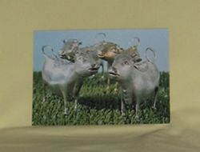
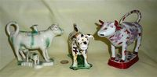
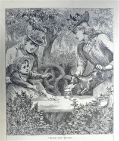

A Bit of History
Long before Cow Creamers…
Well before anyone ever thought of putting milk in tea, cows, bulls, horses, sheep and a variety of wild and mythical animals (and even people) were featured as drinking horns or pouring vessels, generally known as rhytons (or rhyta following the Greek from which the term is derived). They were used both for drinking (usually water or wine), and for pouring liquid onto the ground or some sacred object as a libation or offering. Some of these date as far back as the 2nd millennium BCE. They came in various forms – the head of the bull or cow could form a cup or a pouring vessel (in which case there would be a small hole in the nose), or be the protome on a drinking horn, or even take the stylized shape of the entire animal. They were fashioned in clay, stone, actual horn, and a variety of precious metals depending on the intended use and the wealth of the civilization. Here are a few examples from museums that I downloaded from the thousands of images found by a google search for ‘rhyton’:
While the pictured examples all date from BCE, rhytons or their modern equivalents are still in use today in many different cultures, pretty much worldwide. Examples include the Peruvian Torito de Pucara (originally a ritual vessel from the early Spanish colonial period used for the cattle-branding ceremony, as a flask to contain a mixture of chicha - a corn based beer - and cattle blood, drunk by the priest conducting the ceremony, but now a good-luck symbol placed on the roofs of homes as well as a popular souvenir item), and the Hindu Nandi (representations of Shiva’s bull, used to disperse holy water in Shiva’s shrines). Cow or bull shaped vessels are also still used to hold and disperse liquids such as wine and even oil and vinegar. Thus in looking at the overall history of cow-shaped pouring implements, one has to delve deep into the past, and look globally. Not so of course with the ‘modern’ cow creamer, which dates only to around the 18c and is really quite localized geographically.
So what about cow creamers per se…
Milk is an opaque white liquid produced by the mammary glands of mammals*; indeed, female production of milk is (along with hair) one of the identifying characteristics of mammals. Milk is the primary source of nutrition for young mammals before they are able to digest other types of food, and early lactation milk helps transfer the mother’s antibodies to the baby. One of the important constituents of milk is a disaccharide sugar called lactose. For lactose to be digested, it has to be broken down in the small intestine into its simple sugar components, glucose and galactose. This is done by the action of an enzyme called lactase. The body’s production of lactase decreases significantly after weaning, albeit with considerable variance -- the sort of variance that evolution can act upon -- so that most adult mammals, including humans, lack lactase. This means that any milk they consume travels undigested through the gut and anaerobically feeds intestinal microflora who excrete hydrogen and methane, leading to bloating, cramps, and diarrhea. This condition in humans is called lactose intolerance.
Genes and culture co-evolve, however. Evolution and development can interact. Thus in certain human populations that came to depend for nourishment on dairy products (at least on milk products that hadn’t been processed in some way to remove the lactose, like by fermentation or curdling) lactose tolerance – the ability to digest milk as adults - has become quite common. Given the nutritional value of milk – from goats, cows, horses, yaks (or other mammals although no group that I know of has domesticated hippos, for example…) -- there is a fairly obvious ‘selective advantage’ for those that inherited this trait. In humans, the gene that codes for lactase, called LCT, is generally switched off after weaning. However a single nucleotide polymorphism (SNP) on chromosome 2 keeps the LCT gene working into adulthood. This turns out to be a dominant allele, and thus when there is a selective advantage for lactose tolerance, and wide use of milk, it can spread rapidly and quite thoroughly through the population. This evolutionary adaptation, termed lactase persistence, apparently happened independently some 5-10 thousand years ago in Northern Europe and the Middle East, as well as in some African tribes and in the Asian steppes (scientists are still debating where, when, and how often, and there is also increasing evidence that many pastoral communities have found a cultural solution that enables them to thrive on milk products by using microbes to do the digesting, as practiced by lactose intolerant modern Mongolians). And inevitably lactase persistence spread as populations from those areas interbred with others. I’ve borrowed a map from Wikipedia’s article on lactose intolerance (source = https://www.food-intolerance-network.com/food-intolerances/lactose-intolerance/ethnic-distribution-and-prevalence.html) that shows its percentage (blue means more intolerance, green more tolerance) in adult humans these days, and it turns out that intolerance is the rule, not the exception, over large parts of the globe. This may explain, for example, why Dairy Queen, 31 Flavors, and Ben and Jerry’s would not find China, South Africa, or most of South America to be very good markets.
From the lactose intolerance page in Wikipedia.{kind=link}
Given that art to a large extent reflects the values of the artist (and the artist’s clients), one wouldn’t expect to find a whole lot of cow-shaped liquid holders from the Romans, or the Chinese, or the Incas, or American Indians; there are a few from ancient Egypt where the use of cattle for milk dates from the 4th C BC (and the goddess Hathor is sometimes depicted as a cow). However, apparently nobody gave much thought to fashioning something in the shape of a cow to specifically dispense milk and cream until sometime in the early 18th century when a few ceramic ones were made in Holland, and then in the mid -18th century when a Dutch silversmith named John Schuppe began to fashion silver ones for sale to the British gentry, tea with milk (and cocoa, etc) being as popular in London then as now.**
{kind=link}
Schuppe may not have been the first to produce silver cow
creamers, but he does seem to have been the one who popularized them. They became ‘the thing’ in upper
class British homes, and there are a good number of his still around today (I have 2, plus 3 modern
copies); indeed it’s a Schuppe creamer that achieved notoriety in Sir P.G.Wodehouse’s 1938 classic The Code
of the Woosters. If only the quite expensive London-bred silver cow creamers had become popular, it’s
highly doubtful that the species would have spread as widely as it has…one can assume that the gene that
codes for collecting silver cows is, so to speak, a recessive allele…In the great tradition of
“upstairs-downstairs” however, what’s good for the master is good for the servant, and so as the silver
ones proliferated, the potteries in Staffordshire began fashioning cow shaped creamers for the common folk.
These became exceedingly popular – apparently a dominant allele to really stretch the analogy - and the
manufacture of ceramic cow creamers quickly spread to other parts of the UK and to the continent. The only
problem was that many of these early ones had creases and cracks where the milk got stuck (refrigeration
and sanitation not being what they are today), resulting in not infrequent salmonella poisoning.
Manufacturing processes soon improved however, and during the Victorian era (1837-1901) -- as depicted in
this 1892 wood engraving from “Chatterbox” -- cow creamers became increasingly popular and wide spread,
both for dispensing milk, and as souvenirs and subjects on spill vases. 
{kind=link}
{kind=link}
For folks visiting the UK, the V&A has four lovely examples of Schuppe’s creamers (shown in the above picture of their postcard), and The Potteries Museum and Art Gallery in Stoke-on-Trent has a magnificent collection of some 667 early pottery creamers collected over some 30 years by Mrs. Gabrielle M. Keiller and gifted to the museum in 1962. See http://www.search.staffspasttrack.org.uk/engine/resource/default.asp?resource=21249 for a bit about that collection and early history.
* For those who care about ‘why’, see for example http://nationalzoo.si.edu/SCBI/SpotlightOnScience/oftedalolav20030714.cfm
** This begs the question as to when and why the Brits started to add milk, then cream, to their tea. They weren’t the first to do so, although they have certainly established the habit as a national characteristic (well, my wife puts milk in her tea, but that’s another story…). Although tea had been drunk in Asia for over 5000 years and in parts of Europe since the middle of the 16c, according to a variety of web sources tea first arrived in London in the 1650s, and drinking it (as a substitute for gin or beer) only started to become popular when King Charles II married the Portuguese princess Catherine of Braganza in May 1662. She was an avid tea drinker (but no milk for her), brought tea to England as part of her wedding dowry, and established the custom first at court and then in fashionable circles in London. According to C. Bernhard Hughes’ Small Antique Silverware, tea-making instructions published in London in 1678 mention adding a bit of sugar to taste, but say nothing about milk; contrarily, Jane Pettigrew’s The Tea Companion states that an advertising broadsheet of 1660by one of the earliest purveyors of the drink in London claimed tea “being prepared with Milk and Water strengtheneth the inward Parts”. Whatever the case in England however, according to some sources (but not Ms Pettigrew who disagrees) by those dates adding a lot of milk to tea was practiced by the Dutch who were the first to popularize tea drinking in the West in the early 17c. The Dutch use of milk in tea (or not…) was purportedly based on reports of how the Chinese drank their tea; Dutchman Johann Nieuhoff reported having been offered tea with milk at an imperial banquet for the Dutch Ambassador and his staff in Canton in 1655. Although the Han Chinese never drank milk (and still don’t drink it, being lactose intolerant) ‘milk tea’ (made with tea, water, milk, butter and salt – see chadao.blogspot.com of 7 April 2007, for example) was a customary, traditional and favorite drink of the Manchu, a Tungistic people of northeastern China who ousted the Han from the throne and established the Qing Dynasty in 1644. That dynasty lasted until the early 20c, so Europeans who visited China’s royalty from the mid-17th through 19 centuries would have found milk with tea to be normal. In addition to the problematic Dutch use of milk with tea following the Chinese example, there are also reports that at least some French ladies of note used milk in their tea. According to a 5 Nov 2010 teasquared.blogspot.com essay on “Why add milk to tea? A historical question” one Mme de la Sablière who ran an influential 17c literary salon poured milk into her porcelain cups before adding tea, although there seem to be debates about whether this was to prevent breakage of the fragile cups, make handling easier, or simply for taste. Mme de Sevigné, famed for her letters to her daughter, is also credited with having mentioned adding milk to tea in one of them. Precisely how and when this practiced migrated to England and then became widely popular there remains somewhat of a mystery; but one key fact, again from C. Bernhard Hughes’ book, is that “the earliest known silver milk jug dates from ~1702”…and since in fashionable British circles silver implements were extremely popular, and it was in those circles that tea drinking was first widely adopted in London, we can safely assume that milk in tea because firmly established as the ‘right thing’ to do in Britain at around the start of the 18c. It is also likely that this habit became more popular and widespread in England than elsewhere about his time because the East India Company’s monopoly on the English tea trade dates from the early 18c, and the Brits subsequently developed a preference for Indian teas which were stronger and a bit more bitter than those from China, and thus better accommodated the milk. Hughes also notes that from the shape of the early milk pots (or ‘milk ewers’ as they were entered by the London Assayer’s office) the milk was initially served hot; and further, that “cream does not appear to have been served with tea until about 1780”. Thus for the sake of this web page, we can assume that the early “cow creamers” were initially designed to dispense milk.